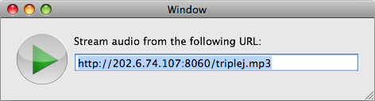

Please note: this article is part of the older "Objective-C era" on Cocoa with Love. I don't keep these articles up-to-date; please be wary of broken code or potentially out-of-date information. Read "A new era for Cocoa with Love" for more.
Streaming and playing an MP3 stream
This week, I present a sample application that streams and plays an audio file from a URL on the iPhone or Mac. I'll show how the application was written by expanding upon Apple's AudioFileStreamExample, including a work-around for an Audio File Stream Services' crash bug when handling streaming MP3s.
Update (2009-06-17): I have written a new post detailing and fixing the problems in this implementation titled: Revisiting an old post: Streaming and playing an MP3 stream.
Introduction
Playing an MP3 stream seems like it should be a straightforward task that the Cocoa APIs would handle easily. Unfortunately, the normal approach to handling media (i.e. "Let Quicktime Handle It") fails here — a quick attempt to play streaming MP3s in Apple's QTKitPlayer example results in a few seconds of no response, followed by a "-2048" error.
Of course, there's a way to play an MP3 stream without using QTKit. I'll show you how and the final result will be a sample application that looks like this:
Since I link to their stream by default in the application, I should probably point out that Triple J is an Australian radio station.
You can download:
Update (2009-06-17): The location of the code has changed. The new, updated version of the code is now located at AudioStreamer (you can also browse the source code repository). The same repository includes both iPhone and Mac versions.
AudioToolbox
There is probably a way to make QTKit play streaming MP3s. I decided to go a different way instead.
In Mac OS X 10.5 (Snowless Leopard), Apple introduced the AudioToolbox framework which contains the Audio File Stream Services and Audio Queue Services that we'll use to solve the problem. These are pure C APIs: not as clean and simple to use as the Cocoa Objective-C APIs, but once written, should get the job done.
Audio File Stream reads the raw bytes and finds audio packets within them. The Audio Queue takes packets and plays them on the sound hardware. Between the two, they should handle streaming playback.
AudioFileStreamExample
At the moment, the AudioToolbox doesn't have any beginner-friendly "Guide" documentation. The only detailed introduction is the afsclient.cpp file in the AudioFileStreamExample that Apple provide (you'll find it in /Developer/Examples/CoreAudio/Services/AudioFileStreamExample).
Sadly, this example is missing a few things to make it work as a proper player:
- Doesn't wait for audio to finish (the program quits when the data finishes loading, not when it finishes playing)
- Never plays the final audio buffer
- Only plays variable bit-rate data
- Doesn't provide "hints" about the data format (many file types won't be recognized)
Addressing the issues
Waiting until the playback is finished
Immediately after the Audio Queue is created in the MyPropertyListenerProc, you can add a listener to the kAudioQueueProperty_IsRunning property of the Audio Queue. This will allow us to determine when playback has started and (more importantly) when playback has properly finished.
// listen to the "isRunning" property
err = AudioQueueAddPropertyListener(myData->audioQueue, kAudioQueueProperty_IsRunning, MyAudioQueueIsRunningCallback, myData);
if (err) { PRINTERROR("AudioQueueAddPropertyListener"); myData->failed = true; break; }With this in place, we can implement the MyAudioQueueIsRunningCallback function and use it to wait until the audio has finished playing before we exit the program.
The documentation doesn't point it out but the MyAudioQueueIsRunningCallback function will not be called when the audio stops unless the thread from which the stop was issued has a run loop (e.g. call CFRunLoopRunInMode in a loop while waiting for completion).
Play the final audio buffer
This is a simple problem. All that is needed is to call the MyEnqueueBuffer function once more, after the data has finished loading, to ensure that the buffer in progress is sent to the Audio Queue. It may help to flush the queue as well.
MyEnqueueBuffer(myData);
err = AudioQueueFlush(myData->audioQueue);
if (err) { PRINTERROR("AudioQueueFlush"); return 1; }Handle CBR data too
The "for CBR data, you'd need another code branch here" comment in the AudioFileStreamExample is a bit of a giveaway on this point. Basically, the code which follows that comment should be wrapped in an "if (inPacketDescriptions)" conditional, followed by an else that looks like this:
else
{
// if the space remaining in the buffer is not enough for this packet, then enqueue the buffer.
size_t bufSpaceRemaining = kAQBufSize - myData->bytesFilled;
if (bufSpaceRemaining < inNumberBytes) {
MyEnqueueBuffer(myData);
}
// copy data to the audio queue buffer
AudioQueueBufferRef fillBuf = myData->audioQueueBuffer[myData->fillBufferIndex];
memcpy((char*)fillBuf->mAudioData + myData->bytesFilled, (const char*)inInputData, inNumberBytes);
// keep track of bytes filled and packets filled
myData->bytesFilled += inNumberBytes;
myData->packetsFilled = 0;
}Straightforward stuff: you just copy all the data into the buffer, without needing to worry about packet sizes.
Hinting about data types
This is a bit more of an open ended problem. A few different approaches can work here:
- Use file extensions to guess the file type
- Use mime types provided in HTTP headers to determine the file type
- Continuously invoke AudioFileStreamParseBytes on the first chunk of the file until it returns without an error
- Hardcode the type, if you can presume it in all cases
I only implemented the first of these options. If you know the URL of the source file, it goes a little something like this:
AudioFileTypeID fileTypeHint = 0;
NSString *fileExtension = [[url path] pathExtension];
if ([fileExtension isEqual:@"mp3"])
{
fileTypeHint = kAudioFileMP3Type;
}
// ... and so on for a range of other file typesThen you pass the fileTypeHint into the call to AudioFileStreamOpen.
Final nasty bug
After making all these changes, the Audio File Stream Services hit me with a nasty bug: AudioFileStreamParseBytes will crash when trying to parse a streaming MP3.
Of course, if you let bugs in other people's code discourage you, you won't get too far as a programmer. Even if the bug is truly in someone else's code (99% of the time the real cause is in your own code), there's often a way around the problem.
In this case, if we pass the kAudioFileStreamParseFlag_Discontinuity flag to AudioFileStreamParseBytes on every invocation between receiving kAudioFileStreamProperty_ReadyToProducePackets and the first successful call to MyPacketsProc, then AudioFileStreamParseBytes will be extra cautious in its approach and won't crash.
So, set a boolean named discontinuous in the myData struct to true after:
case kAudioFileStreamProperty_ReadyToProducePackets:and set it to false again at the start of MyPacketsProc, then replace the call to AudioFileStreamParseBytes with:
if (myData->discontinuous)
{
err = AudioFileStreamParseBytes(myData->audioFileStream, bytesRecvd, buf, kAudioFileStreamParseFlag_Discontinuity);
if (err) { PRINTERROR("AudioFileStreamParseBytes"); myData->failed = true; break;}
}
else
{
err = AudioFileStreamParseBytes(myData->audioFileStream, bytesRecvd, buf, 0);
if (err) { PRINTERROR("AudioFileStreamParseBytes"); myData->failed = true; break; }
}and all should be well.
Making a proper Cocoa application out of it
The final step was to take the reworked example and set it up as part of a proper Cocoa application. For this, I decided to further add the following:
- Load the data over an NSURLConnection instead of a socket connection.
- Handle the connection in a separate thread, so any potential blocking won't affect the user-interface.
- Wrap the construction and invocation in an Objective-C class.
- Make the isPlaying state an NSKeyValueObserving compliant variable so the user-interface can update to reflect the state.
- Since the program always fills one buffer completely before audio starts, I halved the kAQBufSize to reduce waiting for audio to start.
I invite you to look at the AudioStreamer code in the sample application to see how this was done. It is fairly straightforward. Where possible, AudioStreamer keeps the code, style and approach of the AudioFileStreamExample. I don't advocate using so many boolean flags or public instance variables in normal situations.
Conclusion
Download: You can download the complete source code for this post AudioStreamer from Github (you can also browse the source code repository). The same repository includes both iPhone and Mac versions. This code includes the improvements from my later post Revisiting an old post: Streaming and playing an MP3 stream
The application works. Given the learning curve of a new API and the MP3 parsing bug, I'm fairly pleased I succeeded.
The program will handle other types of stream (not just MP3s) as well as non-streaming files downloaded over HTTP (although the player will block the download so that it only downloads at playback speed — this implementation doesn't cache ahead).
I think the biggest limitation in the implementation's current form is that it doesn't read mime types or aggressively try different file types, so URLs without a file extension may not work.
With regards to the bug in AudioFileStreamParseBytes, if this discussion thread is accurate, it appears that Apple have already fixed the MP3 parsing bug in the iPhone version of the function, so the fix should make it into an upcoming version of Mac OS X.
A Cocoa application driven by HTTP data
Sliding UITextFields around to avoid the keyboard